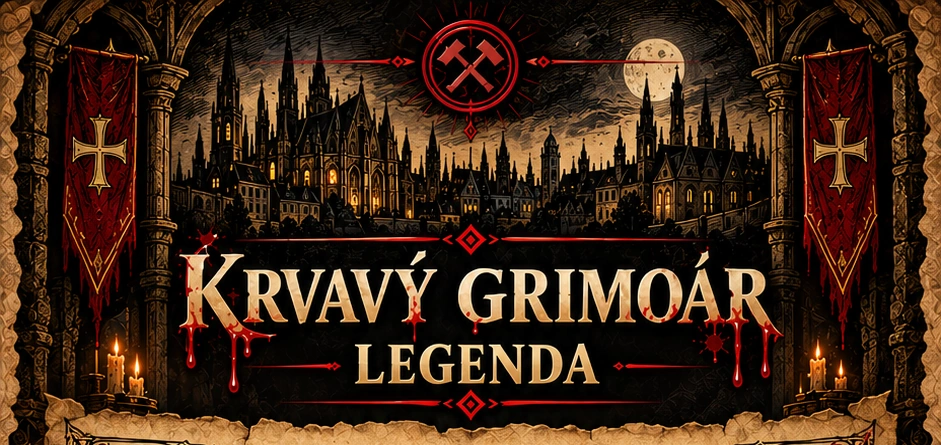
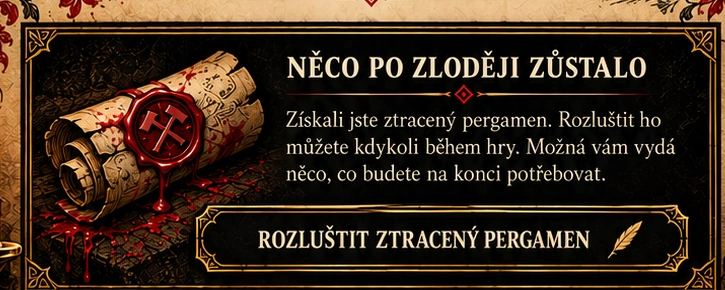
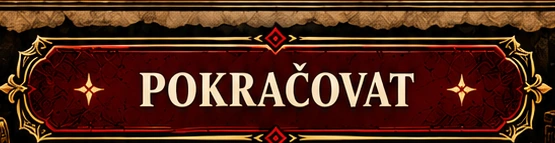
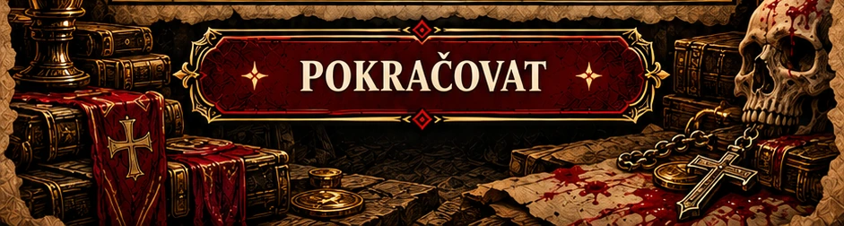
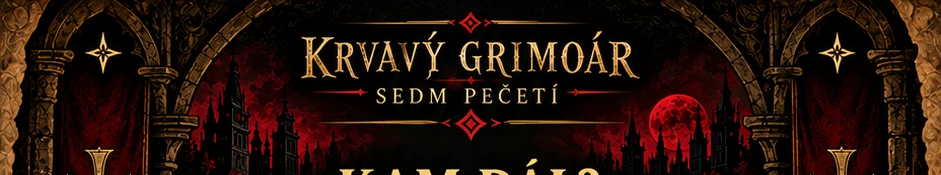
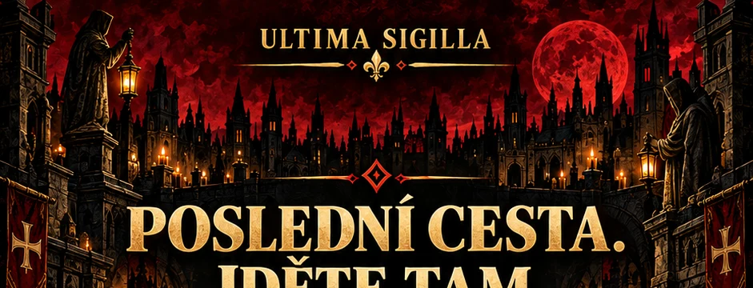

Zpropadení pacholci! Kutná Hora se otřásá v základech!
Včera v noci někdo hodil purkmistrovi otevřeným oknem přímo do pelechu zkrvavenou prasečí hlavu a z kované truhlice v mázhausu radnice zmizela nejcennější a nejobávanější věc ve městě: Liber Peccatorum Montanorum, přezdívaný Krvavý grimoár.
Není to obyčejná kniha. Je to temná kronika hříchů, kam purkmistr tajně zapisoval všechny prohřešky, úplatky, nevěry a sviňárny, o kterých se dozvěděl od svých špiclů a posluhovačů. Nikdo grimoár nikdy neviděl na vlastní oči, ale ví se, že každý v něm má svůj záznam. Komu se dostane do rukou, získá nevídanou moc nad celým městem – na každého bude něco vědět a bude tak mít všechny v hrsti.
Klepat strachem se musí všechny vrstvy obyvatel. Píše se tam o pokryteckých řádových bratřích, co jenom chlastají po nocích za peníze vybrané na chudé, ve dne pak vybírají odpustky a svými kázáními šíří nenávist mezi lidmi, napadají hlavně ženy, které prý „svádějí bohulibé muže na scestí hříchu“ a nakonec bratru není žádná žena cizí, ani ta cizí.
Najdou se tam havíři, co si cestou z šachty plní kapsy v gatích kradenou rudou, zisk propíjejí v putykách, do krve se rvou a místo doma se povalují v lázních s lazebnicemi.
Zpropadení zvoníci, co zvonili na poplach jen proto, aby se celá Kutná Hora posrala strachem, zatímco oni pak v klidu vykrádali krámky poctivých ševců, krejčích a hrnčířů.
A co teprve ostatní? Jsou v tom namočení alchymisté, co slibují králi zlato, ale v křivulích vaří akorát tak páchnoucí sračky a svými podvody tahají z měšťanů poslední groše na „vědu a výzkum“. Najdete tam záznamy o mincmistrech, kteří potajmu pančují stříbrné groše olovem a za úplatky si kupují lány polností. Nechybí ani ti nejmocnější, konšelé, co na radnici káží vodu, ale v noci pořádají zvrhlé pitky a odklánějí peníze z městské kasy pod záminkou příspěvků na opravy hradeb a cest. A o lapcích z místního podsvětí ani nemluvě – u těch má purkmistr jenom stručnou poznámku: okamžitě bez soudu pověsit za nohy na šibenici hned u první brány.
Pod oknem radnice našla stráž pomačkaný kus pergamenu, který zřejmě někomu při útěku vypadl. Není z grimoáru. Není na něm podpis ani pečeť. Jen podivný zápis, který na první pohled nedává žádný smysl. Purkmistr tvrdí, že je to bezcenný cár papíru. Což je samozřejmě nejlepší důvod nevěřit mu ani slovo.



Kdo měl asi největší zájem, aby se tenhle ďábelský svazek ztratil? No samozřejmě ta nejhorší sebranka široko daleko – VY.
Abyste očistili své zpropadené jméno a zachránili si krk před katem, musíte se k tomu prokletému grimoáru dostat jako první a zahladit stopy po svých zločinech dřív, než vás dostanou na šibenici.
Roňte pot a slzy, lámejte si své palice a najděte a zlomte všech sedm pečetí. Oživte své čarodějné chytré placky a vydejte se do spletitých uliček za jejich chabým světlem. Žádejte pocestné, ale nikomu nevěřte a dávejte bacha na zradu – zdi tu mají uši, lampy oči a purkmistrovy stráže nikdy nespí!
Pečetě vám vydají čísla a písmena, celé to dostane smysl a vy budete vědět, kam jít a kde hledat záchranu a spásu.
Kdo dorazí poslední, platí rundu a strouhá mrkev až do Vánoc!
Ite, inflammate omnia – Jděte a zapalte to všude!
A ještě něco, holoto.
Nespoléhejte na nikoho mimo svou chásku. Každý ve městě má důvod lhát, každý něco skrývá a každý by nejradši viděl Krvavý grimoár shořet dřív, než ho někdo otevře, byť jen na jediné stránce.
Potkáte-li jinou družinu, usmívejte se na ně, klidně jim popřejte štěstí — ale hlídejte si kapsy, pečetě i jazyk.
Možná nevědí něco, co vy ano.
Možná jdou po stejné stopě.
A možná čekají jen na chvíli, kdy jim ukážete, kam jít.
Takže ještě jednou:
Nikomu nevěřte. Nic zadarmo neprozrazujte. A hlavně za žádnou cenu nenechte ty ostatní zpropadené mizery dojít ke grimoáru dřív, než se k němu dostanete vy.
Jak hra funguje
Nápovědy a obejití GPS přidávají penalizační minuty. Frakční výhody jsou zdarma.

Ztracený pergamen
Máte-li fyzickou obálku, použijte především oba skutečné kusy. Tohle je jejich digitální záloha.
Slovo máte. Co znamená, zatím neřešte. Schovejte si ho. Budete ho ještě potřebovat.

Sedm pečetí je vašich.
Sedm míst.
Sedm stop.
Sedm příběhů.
A jeden ztracený vzkaz.
Teď už nejde o to hledat dalšího světce, počítat groše, sledovat stíny ani lézt do štol.
CO JSTE CESTOU ZÍSKALI
Čísla určují pořadí.
Písmena ukazují cestu.
Nezapomeňte, že i ztracený pergamen vám něco vydal.
Seřaďte všech osm stop.
Jestli jste během cesty nelhali, nepočítali jako opilý písař a neztratili polovinu výpravy v některé z kutnohorských uliček, měli byste dostat jméno místa, kde vaše cesta končí.
Až ho poznáte —
JDĚTE TAM.
Jděte TAM.
Až budete stát na místě, potvrďte svou polohu.
V díře je pravda.
Tak jste dorazili.
Do místa, kterému se kdysi říkalo prostě:
Díra.
Dnes tu stojí hospoda U Tupouna.
A vlastně je to příhodné.
Protože poctivý příběh o Kutné Hoře nemůže skončit někde v naleštěném paláci.
Musí skončit tam, kde se scházejí lidé, pijí, lžou, chlubí se a občas řeknou pravdu jen proto, že už vypili tolik, že ji nedokážou udržet v sobě.
Právě sem vedla poslední stopa.
Na stole leží balík.
Starý pergamen.
Popraskaná kůže.
Černý vosk.
Na deskách jediné jméno:
LIBER PECCATORUM MONTANORUM
Krvavý grimoár.
Našli jste ho.
Otevřete ho.
První stránky jsou plné jmen.
Kněží.
Havíři.
Zvoníci.
Alchymisté.
Konšelé.
Mincíři.
Lapkové.
Každý někoho podvedl.
Každý něco ukradl.
Každý něco zatajil.
Někteří peníze.
Někteří pravdu.
Někteří jen poslední korbel někomu, kdo se zrovna nedíval.
A pak přichází poslední zápis.
Je čerstvý.
Inkoust ještě skoro nezaschl.
Vrtali se v cizích tajemstvích.
Četli věci, které jste neměli.
Ptali se lidí, kteří nechtěli odpovídat.
A nakonec našli tuto knihu.“
Pod tím je ještě jedna věta:
No dobře.
Možná to byla jen výhrůžka.
Možná...
GRIMOÁR JE VÁŠ
Dokázali jste projít Kutnou Horou, rozlomit sedm pečetí a najít místo, kam vedly všechny stopy.
A jestli jste během cesty zjistili alespoň jedno:
Město se nečte jen z mapy.
Čte se z domů.
Z kamenů.
Z příběhů.
Z pověstí.
Z knih.
A někdy také z hospodských zdí.
Protože dobrý příběh může začít v knihovně.
Ale ten opravdu dobrý často skončí... v Díře.
Tož jděte, darebáci. Dobrodružství skončilo. No vážně, je KONEC.
Ale abych nezapomněl —
rundu platí ten, kdo přišel poslední.
A přineste mu struhadlo.